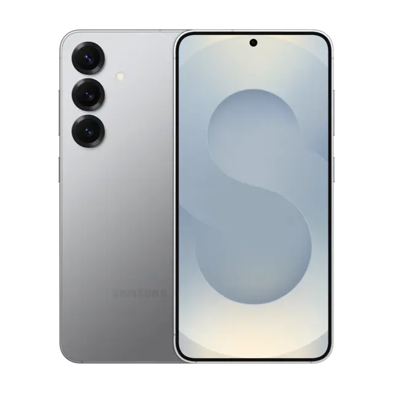

Descubre las novedades del Galaxy S25 Ultra
El mundo de la tecnología móvil ha dado un salto cuántico con la llegada de la serie Samsung Galaxy S25.
Borde de Titanio
El Galaxy S25 Ultra cuenta con un sólido marco de Titanio.
Potencia Bruta
El Galaxy S25 Ultra posee en su interior el nuevo procesador de Qualcom más potente del mercado móvil.
Galaxy AI
Incluye mejoras de Inteligencia Artificial para asistente de fotos.
Especificaciones de los Galaxy S25 y S25+

Galaxy S25
- Cámara ultra ancha: 12 MP
- Cámara de gran angular: 50 MP
- Cámara teleobjetivo: 10 MP
- Cámara frontal: 12 MP
- Batería: 4000 mAh
- Procesador Snapdragon 8 Elite for Galaxy
- Pantalla: 6.2" de 2600nits

Galaxy S25+
- Cámara ultra ancha: 12 MP
- Cámara de gran angular: 50 MP
- Cámara teleobjetivo: 10 MP
- Cámara frontal: 12 MP
- Batería: 4900 mAh
- Procesador Snapdragon 8 Elite for Galaxy
- Pantalla: 6.9" de 2600nits